Air quality monitoring - tutorial#
The Coiote DM and Azure IoT Hub integration lets you create custom use cases with data visualization. See the video and have a sneak peek at the possibilities that the Coiote DM - Azure IoT Hub integration offers you. In the tutorial, you will see how to leverage the integration to create an air quality monitoring in just a few steps.
The text version of the tutorial, complete with the necessary steps and code snippets, is available below:
Prerequisites#
- An active Azure subscription.
- An active Coiote DM account. Please refer to Coiote DM home page for details on how to get it.
- An active Microsoft Power BI account.
- An OpenWeatherMap account with a free API token.
- An active and configured Azure CLI - please refer to the Azure CLI installation guide for details.
Creating and configuring an Azure IoT hub and storage account#
First you need to add a new IoT hub and a storage account in Azure. Here's how to do it:
Creating an IoT hub#
- In your Azure portal home view, go to IoT Hub and select Add.
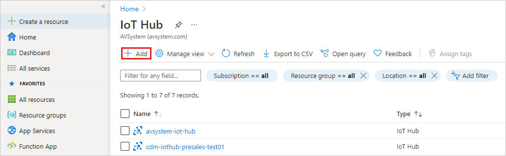
- In the Basics tab:
- select your subscription and resource group,
- pick your region,
- provide a name for your IoT hub. 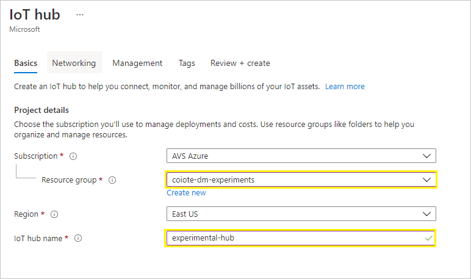
- In the Management tab:
- in Pricing and scale tier select,
- optionally, turn off Defender for IoT.
- In the Review + create tab, click Create. 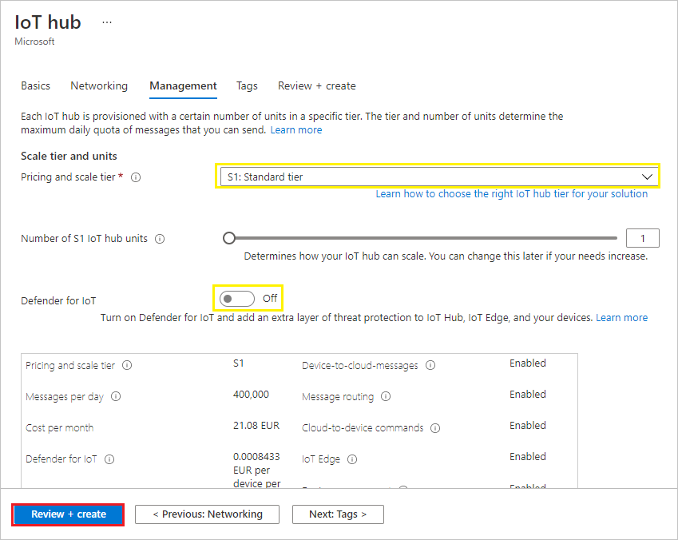
- In the Basics tab:
Creating a storage account#
While your new IoT hub is deploying, you can add a new storage account:
- In the Azure portal, go to Storage accounts and select Add. 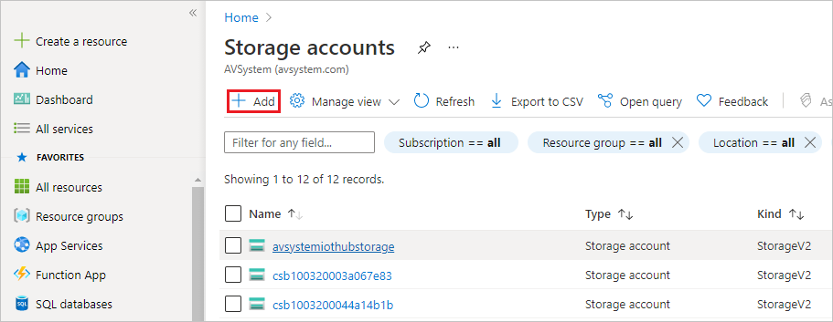
- In the Basics tab:
- select your subscription and resource group,
- provide a name for your storage account,
- pick your location. 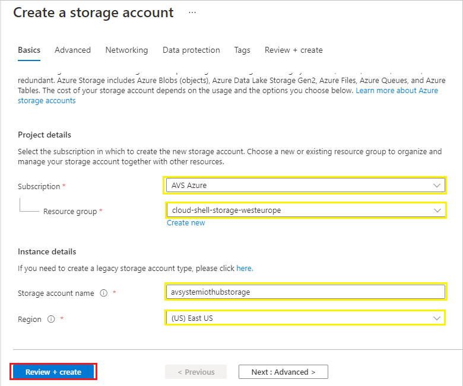
- In the Review + create tab, click Create.
Configuring the Azure IoT Hub integration extension#
Once the deployments are complete, go to Coiote DM to set up the Azure IoT Hub extension. If you haven't done this yet, please follow the instruction for the Azure IoT Hub integration configuration.
Adding and connecting LwM2M air quality meter simulators to Coiote DM and Azure IoT Hub#
- Go to your Azure IoT Hub and add new devices:
- Under Explorers, select IoT Devices and click + New. 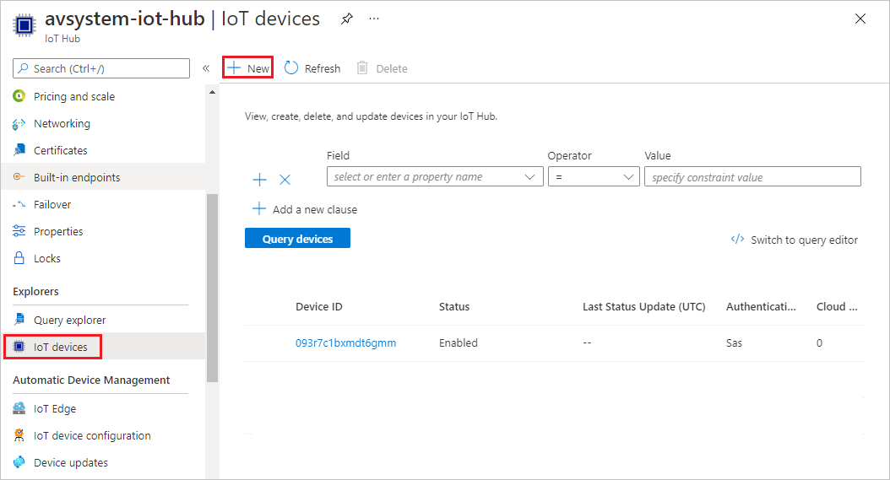
- Provide the name for your first device:
air-quality-meter-example-0. - Click Save. 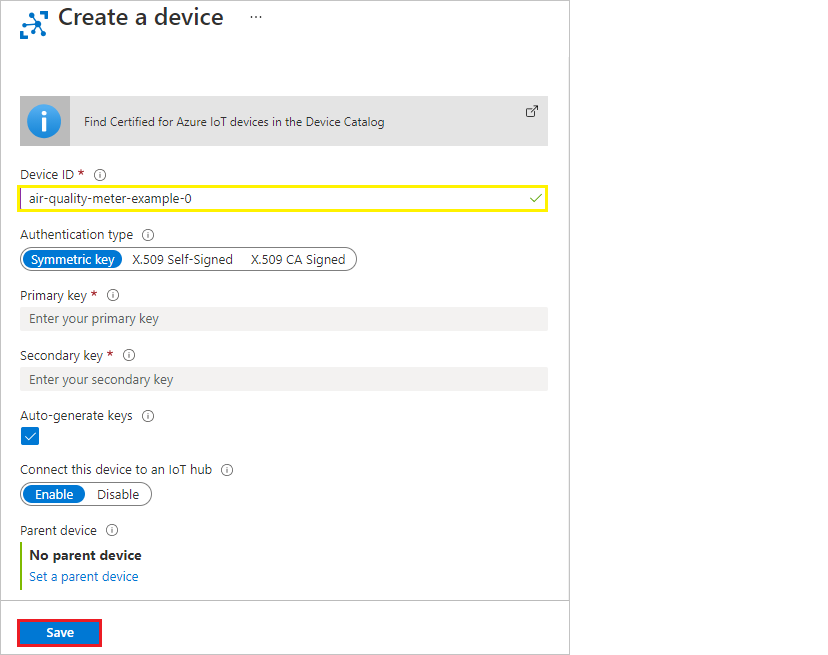
- Repeat the procedure for the other 5 devices (increase the number included in the device name).
- Go to Coiote DM and sync the previously added devices:
- In Device inventory, select Sync with IoT platform -> Azure IoT Hub. 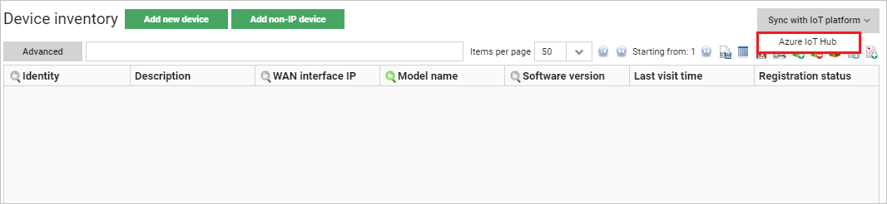
- In the pop-up, click Sync devices. 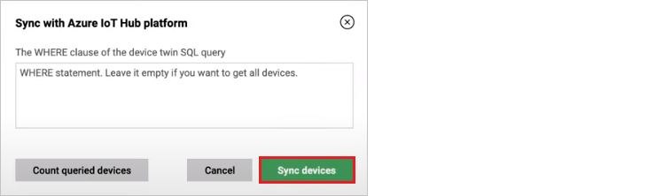
- Devices should then be visible in Device inventory
-
Go to your command line and register the device simulators:
-
Paste and run the following command to create a container group:
az container create -g coiote-dm-experiments --name air-quality-meter-example-0 --image avsystemcom/air-quality-meter-example --environment-variables DEVICEID=air-quality-meter-example-0 SERVER_ADDRESS=eu.iot.avsystem.cloud OPEN_WEATHER_API_TOKEN=exampletokenNote
Remember to change the command parameters accordingly so that they are in line with your naming and credentials.
-
once the command is executed, you should see a JSON payload that describes the content of the container instance. 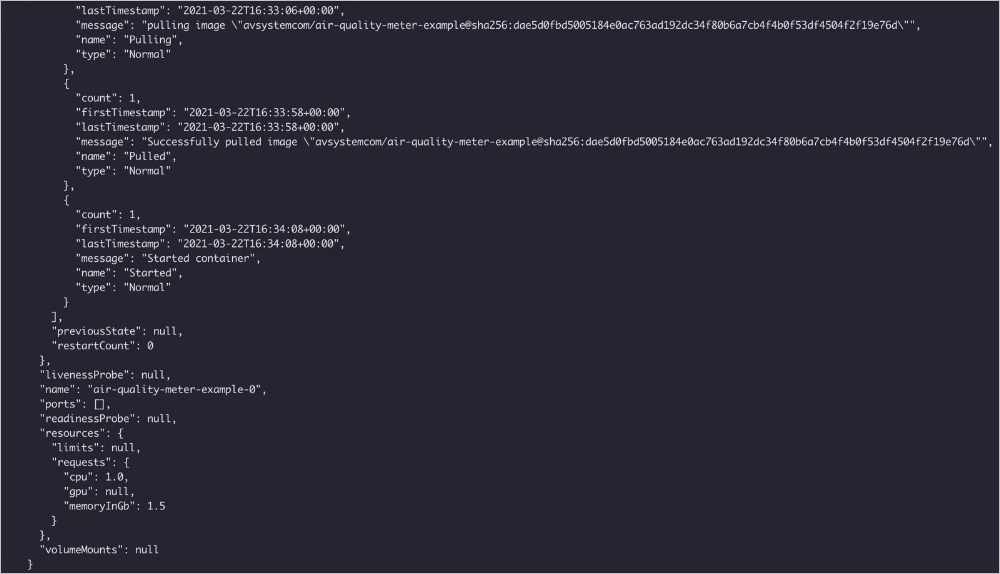
-
-
Go back to Coiote DM and in Device inventory, check if the devices have registered to the platform and if their data model has been updated.
- Click the Refresh data icon if needed.
- Click on a device and in the Device Management Center, select the Actions panel.
- Select the Refresh data model from device link and confirm by clicking Yes, execute task now. 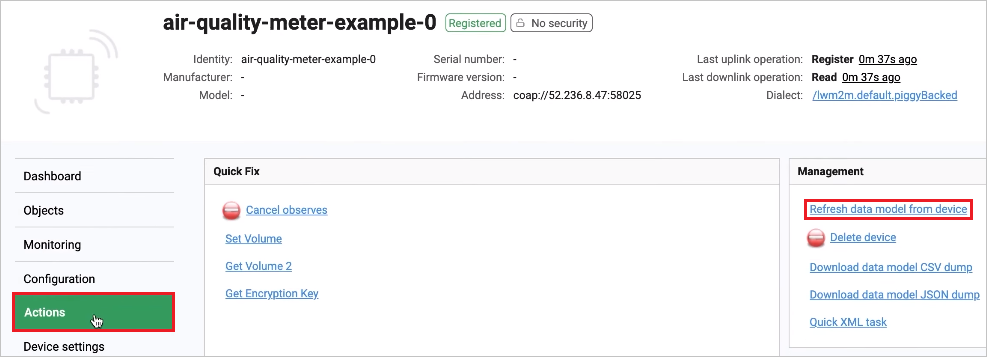
- Go to the Objects panel to see if the data model for the device has been updated. You should be able to see objects such as
3 Device(along with theModel numberresource which shows the name of the city of the temperature reading),3303 Temperature, and3428 Air quality. 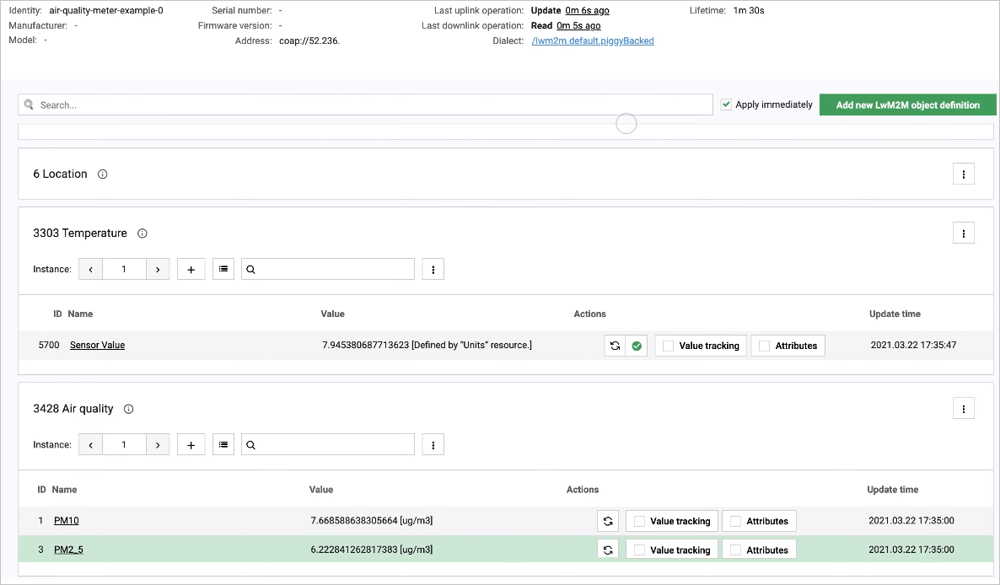
Bidirectional communication using Device Twin#
From Coiote DM to Azure IoT Hub#
- In your Coiote DM account, go to Device inventory, select a device.
- In the Device Management Center, go to the Objects panel.
- In the
1 LwM2M Serverobject, find theLifetimeresource. - Click the pen icon next to it, change the lifetime value and click the Apply link.
- Go to your Azure IoT hub, select IoT devices, click your device and select the Device Twin panel.
- Click Refresh and check in the JSON payload if the reported property for the
1/0/1(Lifetime) resource has changed.
From Azure IoT Hub to Coiote DM#
Note
To read more about how the Device Twins work in the Coiote DM - Azure IoT Hub integration, please refer to the LwM2M Mappings section.
- In your Azure IoT hub, select IoT devices, click one of your added devices and select the Device Twin panel.
-
To change the
Lifetimeresource in Coiote DM, you need to modify the relevant Device Twin desired property.- under the
propertiestag in the Device Twin JSON payload, paste the following nested structure:
- Click Save and Refresh."reported": { "lwm2m": { "1": { "0": { "0": {}, "1": { "value": 45 } } } } }, - under the
-
The value of the resource should now be changed in the Device Twin reported properties as well as in the Coiote DM Objects panel, in the
Lifetimeresource of the1 LwM2M Serverobject.
Passing telemetry to Azure IoT Hub#
Setting group value tracking on resources in Coiote DM#
- In Coiote DM, go to Device inventory and use the search option to display your air quality meter devices. Then, click the Add to group icon.
- In the pop-up, click Add to new group, provide a name for your group (following the pattern root.iothubexample.airqualitymeter), click Confirm and Yes.
- Go to the Group management panel, select your group and click Devices to see if all of your devices are added to the group.
- Go to the Value tracking panel and click Add new. In the pop-up:
- Add value tracking for the Temperature resource:
- Provide the resource path:
Temperature.1.Sensor Value. - In the Notification frequency section, provide the following values:
- At least once every - set it to 10 seconds.
- Not more often than once every - set it to 5 seconds.
- Click Add new.
- Provide the resource path:
- Add value tracking for the Air quality PM10 resource:
- Provide the resource path:
Air quality.1.PM10. - In the Notification frequency section, provide the following values:
- At least once every - set it to 10 seconds.
- Not more often than once every - set it to 5 seconds.
- Click Add new.
- Provide the resource path:
- Add value tracking for the Air quality PM2.5 resource:
- Provide the resource path:
Air quality.1.PM2_5. - In the Notification frequency section, provide the following values:
- At least once every - set it to 10 seconds.
- Not more often than once every - set it to 5 seconds.
- Click Add new.
- Provide the resource path:
- Add value tracking for the Temperature resource:
- Go back to Device inventory and select a device of your group. In the Dashboard view, you should be able to see the value tracking parameters as in the picture below: 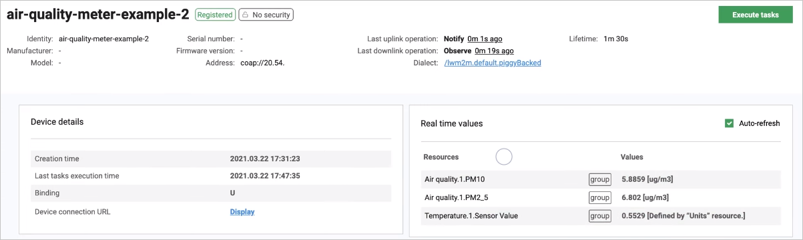
Configuring message routing for sending telemetry data in Azure IoT Hub#
- Go to your Azure IoT hub and add message routing:
- Under Messaging, select Message routing and click + Add.
- Provide a name for your event, for example
EventRoute. - From the Endpoint drop-down list, select events.
- In the Routing query, paste the following:
IS_DEFINED($body.lwm2m.3303.1.5700.value) OR IS_DEFINED($body.lwm2m.3428.1.1.value) OR IS_DEFINED($body.lwm2m.3428.1.3.value) - Click Save.
- While in the Message routing panel, go to the Enrich messages tab to set up location tracking:
- For latitude:
- Name - type
lat - Value - copy and paste
$twin.properties.reported.lwm2m.6.1.0.value - Endpoint(s) - select
events
- Name - type
- For longitude:
- Name - type
lon - Value - copy and paste
$twin.properties.reported.lwm2m.6.1.1.value - Endpoint(s) - select
events
- Name - type
- For longitude:
- Name - type
deviceId - Value - copy and paste
$twin.properties.reported.lwm2m.3.1.1.value - Endpoint(s) - select
events
- Name - type
- For latitude:
- Use search to go to Stream analytics jobs and create a job for transferring the gathered data to Power BI.
- Click + Add and provide the following:
- Job name - e.g.
avsystem-iot-hub-to-powerbi. - Resource group - pick your resource group.
- Click Create.
- Job name - e.g.
- Once your deployment is complete, click Go to resource.
- Click + Add and provide the following:
- While in your Stream Analytics job panel, add a stream input and output and write a query:
- Under Job topology, select Inputs.
- From the + Add stream input drop-down list, select Iot Hub and provide the following:
- Input alias - e.g.
avsystem-iot-hub-input. - Consumer group - pick the
$Defaultgroup. - Click Save.
- Input alias - e.g.
- From the + Add stream input drop-down list, select Iot Hub and provide the following:
- Under Job topology, select Outputs.
- From the + Add drop-down list, select Power BI and click Authorize.
- Log in to Power BI using your Azure account.
- In the Power BI right-hand side panel, provide the following:
- Output alias - e.g.
avsystem-iot-hub-output - Dataset name - e.g.
AVSystemIoTHubDataSet - Table name - e.g.
Data
- Output alias - e.g.
- Click Save.
- Under Job topology, select Query.
- Paste the following query into the query input field (remember to adjust your naming inside the query if needed):
SELECT CAST(lwm2m."3303."1"."5700".value as float) as temperature, CAST(lwm2m."3428."1"."1".value as float) as pm10, CAST(lwm2m."3428."1"."3".value as float) as pm25, GetMetadataPropertyValue("avsystem-iot-hub-input", '[User].[lat]') as lat, GetMetadataPropertyValue("avsystem-iot-hub-input", '[User],[lon]') as lon, GetMetadataPropertyValue("avsystem-iot-hub-input", '[User],[deviceId]') as deviceId2, EventProcessedUtcTime as processedTimestamp, IoTHub.EnqueuedTime as iotHubTimestamp, IoTHub.ConnectionDeviceId as deviceId INTO "avsystem-iot-hub-output" FROM "avsystem-iot-hub-input" - Click Save query.
- Paste the following query into the query input field (remember to adjust your naming inside the query if needed):
- In your Stream analytics job, go to Overview and click Start and confirm by clicking Start in the Start job window to run the created query.
- Under Job topology, select Inputs.
Data visualization using Power BI#
Once the query is finished, you can go to Power BI to create a visualization for the data you have gathered.
- Go to https://powerbi.microsoft.com/ and sign in to your account.
- Go to My workspace and find your recently created dataset.
- Click the more options icon and select Create report
- From the Visualizations menu, select the table icon and drag and drop it to the work space.
- From the Fields menu, select the
deviceId2,temperature,pm10andpm25parameters. - In the Values submenu, expand the drop-down list for the
temperature,pm10andpm25parameters and select Average for each.
- From the Fields menu, select the
- From the Visualizations menu, select the table icon and drag and drop it to the work space.
- Create a map with air quality indicators:
- From the Visualizations menu, click the get more visuals icon and select Get more visuals.
- Use search to find the Heatmap and click Add.
- From the Visualizations menu, click the Heatmap icon.
- Add the relevant parameters to the map data fields:
- To the Latitude data field, drag and drop the
latparameter from the Fields menu. - To the Longitude data field, drag and drop the
lonparameter from the Fields menu. - To the Value data field, drag and drop the
pm10parameter from the Fields menu.- In the Value data field, expand the drop-down list and select Average.
- To the Latitude data field, drag and drop the
- To refresh the displayed data, click the Refresh button located in the upper navigation bar.
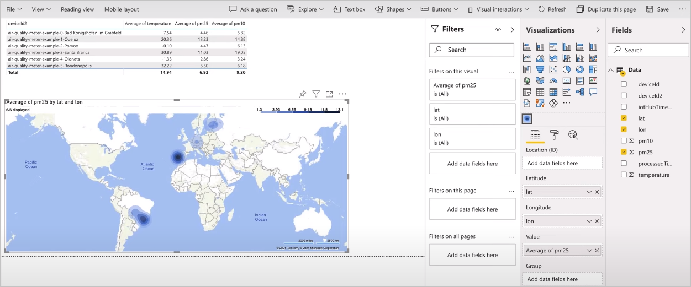